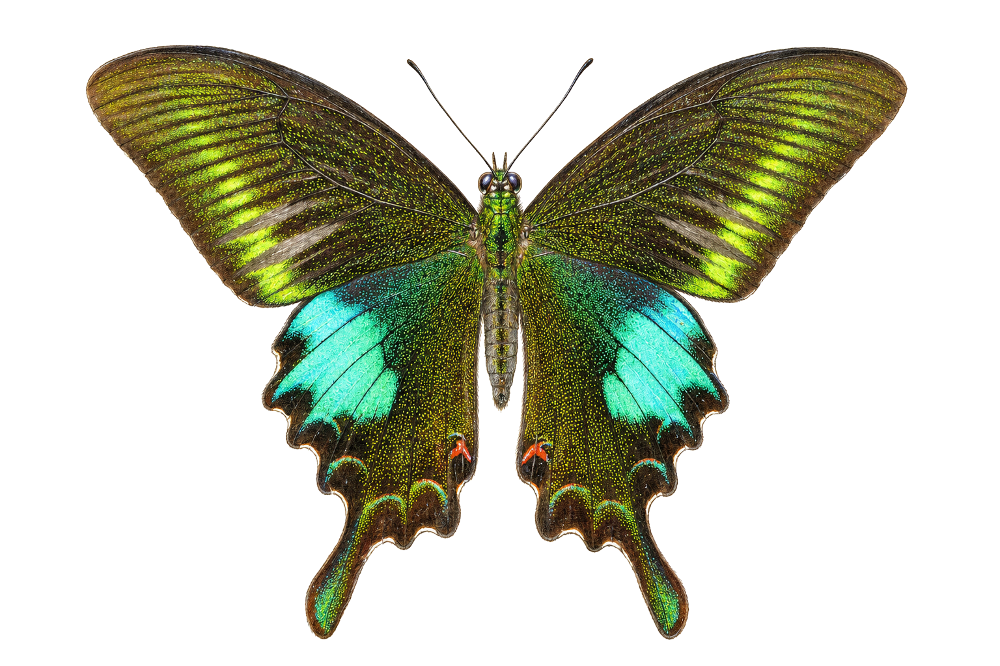

アゲハチョウ科 · 010 / 165
ヤエヤマカラスアゲハ
Papilio bianor

特徴・見分け方
青緑色の光沢が美しいカラスアゲハの仲間。古い文献と近年の資料で学名の使い方が異なることがある。
雌雄の違い
雌雄とも金属光沢を持つ。今回の地域資料では、雌雄を確実に分ける形態の詳細は未確認。
大きさ
前翅長 約65 mm（一般的な目安。沖縄個体群だけの実測範囲ではない）
沖縄の島別記録
水納島（本部町）*、瀬底島*、沖縄本島*、宮古島、石垣島、竹富島、小浜島、黒島、新城島、鳩間島、西表島、外離島、波照間島、与那国島。 記録島のすべてで同じ頻度とは限らない。
生息環境
八重山の森林・林縁。
生態・識別上の補足
本図鑑は地域資料と識別ガイドのP. bianor表記を採用。P. bianor ryukyuensisの表記も見られる。沖縄本島の同名記録には由来の違う個体が含まれるため八重山の分布と混同しない。
幼虫・食草
カラスザンショウ、ハマセンダンなどミカン科。
参照元・参考資料
- 沖縄蝶類生態図鑑：ヤエヤマカラスアゲハ
資料内の参照日: 2026-11-10 - 日本チョウ類保全協会 識別ガイド
資料内の参照日: 2026-11-10 - 形態・大きさの補足資料
資料内の参照日: 2026-11-10
掲載内容は提供データ（2026年11月10日更新）に基づきます。記録島は現在の定着や観察の容易さを保証しません。イラストは参考表現で、同定には実物の形態と参照資料を併せて確認してください。